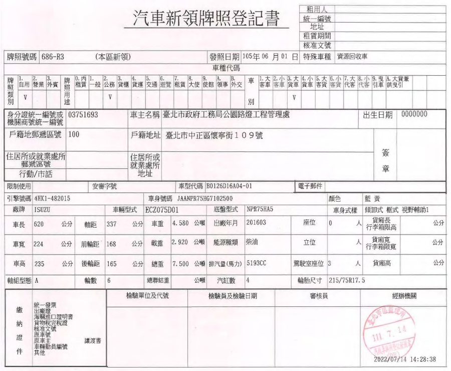
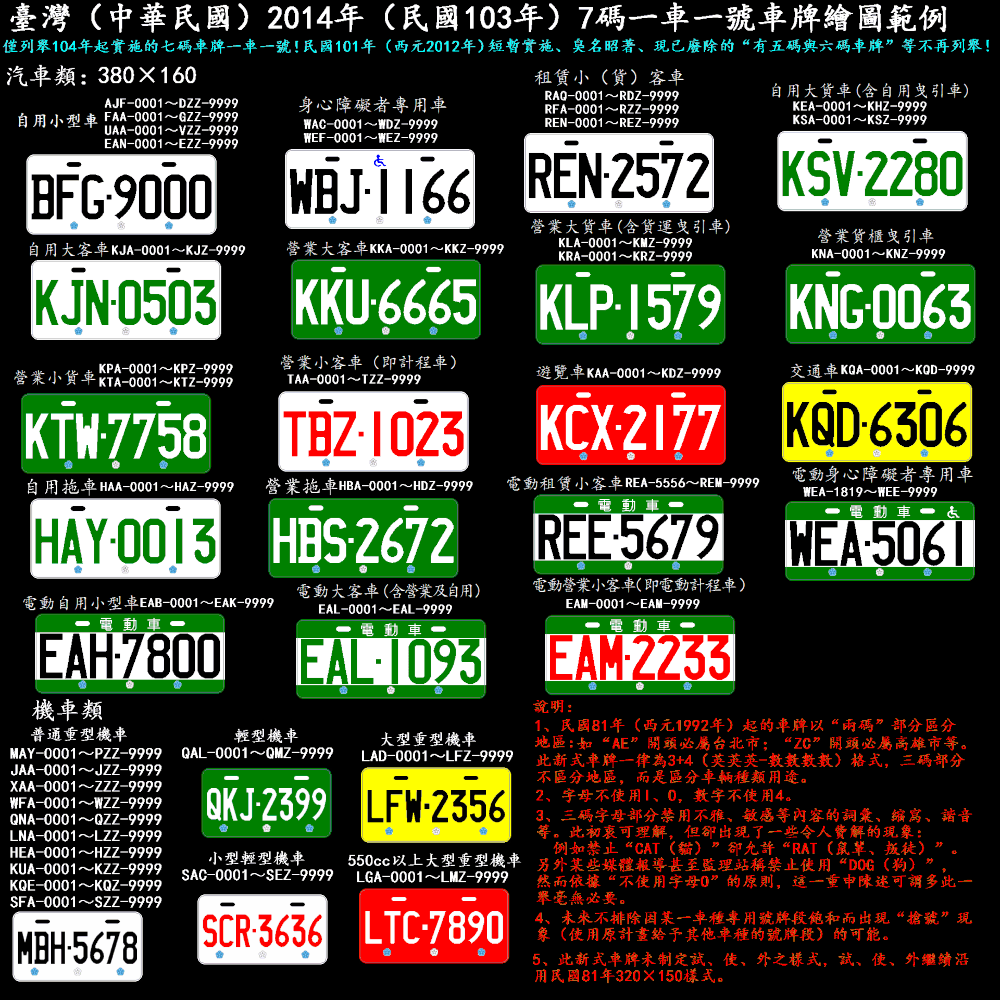
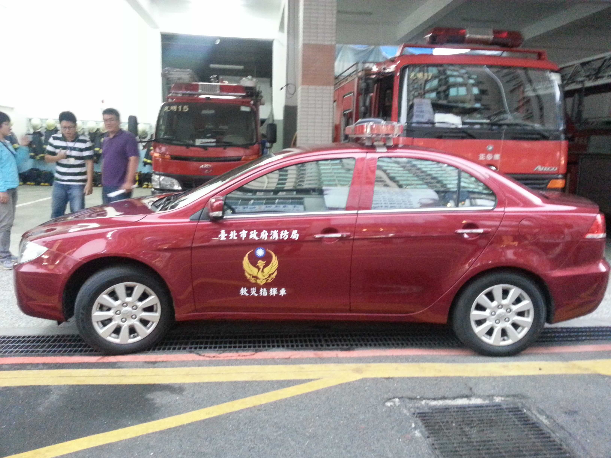
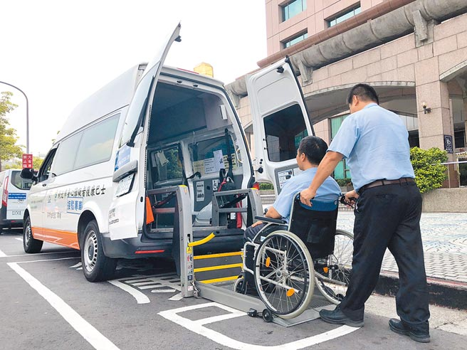
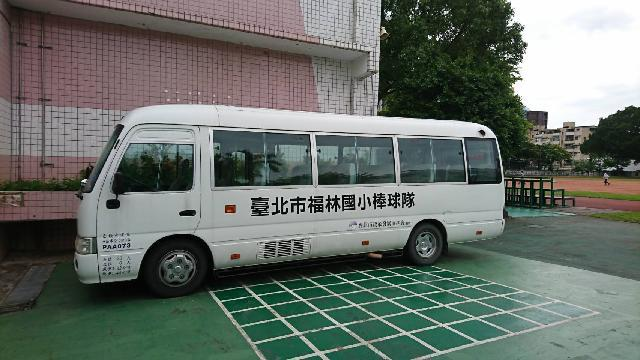
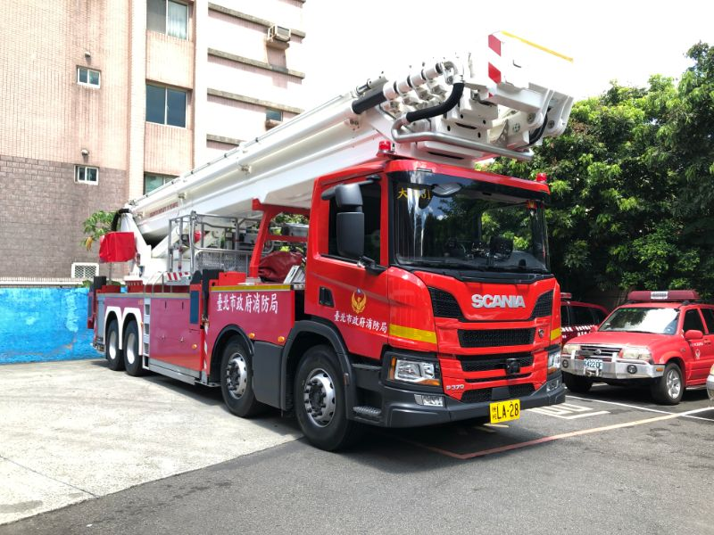
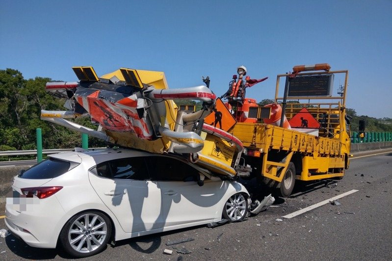

車輛檢驗
事件案例
- 汽車隔熱紙透光率新制上路 驗車不過恐扣牌｜華視新聞 20260228
- 環保局驗車噪音恐釀火燒車! 驗車2分鐘狂催5次油門原地拉轉超傷車
- 驗車屢不過"花錢找代辦"就OK?! 車主怒批"勾結黃牛"?!│中視新聞 20250407
製造或進口審驗
 |
| 製造或進口審驗 |
新車領牌檢驗
- 115年2月28日汽車隔熱紙新制（道路交通安全規則
第39條及第39條之1）
- 適用範圍：該日期後第一次申領牌照之新車
- 不溯既往：該日期前已領牌車輛不受影響，但更換隔熱紙時建議參考新標
- 透光率：
- 前擋風玻璃：必須達到70%以上，但前擋上緣15公分內遮陽條不受限。
- 前側車窗（駕駛座/副駕）：必須達到40%以上。
- 後側窗與後擋風玻璃：不受限制。
- 隔熱紙必須具備原廠浮水印或車安中心 (VSCC) 核發標誌(須貼於前擋風玻璃右下角-從車內看副駕駛座側)，否則驗車不合格。
- 罰則與後續處理：依道路交通管理處罰條例 第17條最高處1,800元罰鍰，逾期 6個月以上者，註銷牌照。
汽車定期檢驗
| 汽車種類 | 免定驗 | 每年 1 驗 | 每年 2 驗 | 每年 3 驗 |
|---|---|---|---|---|
| 自小客（不含幼童車及LPG車）、大型重型機車 | 前 5 年 | 第 6-10 年 | 第 11 年起 | - |
| 租賃期 1 年以上之租賃自用小客車、小客貨 | 前 3 年 | 第 4-6 年 | 第 7 年起 | - |
| 其他自用車及營業車 | - | 前 5 年 | 第 6 年起 | 營業大客車 第 11 年起 |
| 拖車 | - | 出廠日起 | - | - |
- 屆定檢期限汽車，依新車原發照日期（半年1驗車第2次為原日期加減6個月)前後1個月為定期檢驗期間，核心項目與重點：
- 行政文件：查核強制險保險證有效期需滿30日以上，且罰單、燃費均已繳納無欠費。
- 腳煞車與手煞車效能（主要重點）：總煞車力需達車重50%以上；手煞車需達16%以上。左右輪平衡差不超過30%。
- 前輪定位（側滑測試）：車輛開過感應板，測量前輪束角，如偏差太大（每公里偏差超過5公尺），代表輪胎容易異常磨損且會造成行駛不穩。
- 燈光檢查：頭燈限白或黃色，光度與照射角度需達標。其餘方向燈（橙/黃）、煞車燈（紅）需全數正常運作。
- 胎紋深度：胎紋必須超過1.6公釐（不可磨到輪胎溝槽內的指示點）。
- 車身規格與外觀：車色、引擎號碼、車身號碼必須與行照相符。外觀不得有明顯未變更登記之改裝（如加裝固定式行李架等）。
- 隔熱紙標識：2026/2/28後領牌的新車，未來定檢時將增加「檢查合格標識（浮水印或貼紙）」，舊車則維持目視視線清晰即可。
臨時檢驗
- 設備變更（改顏色、改LED頭燈）、民眾檢舉（顏色、燈光、改裝、缺損、排氣管非原廠）、停牌復駛等，僅限於監理所驗車。
- 10年以上老車過戶需驗車，但若3個月（機車4個月）內已定檢合格則免。
- 噪音車、烏賊車之檢舉，會收到地方環保局寄發之「噪音車限期檢驗通知」或「柴油車不定期檢驗通知」，非屬監理檢驗。
排氣檢驗
- 環境部：
- 燃油機車：出廠第6年起每年1驗（前後1個月內），於環境部委託機車排氣檢驗站（路邊常見掛有標章的機車行）。
- 燃油汽車：出廠第9年起每2年1驗，於監理所定檢時同時於監理所或代驗廠檢驗，但未通過者次年續驗。
號牌與行照
- 汽車新領牌照登記書
 |
| 汽車新領牌照登記書 |
- 車輛號牌
 |
| 車輛號牌 |
- 行車執照
 |
| 行車執照 |
車身式樣及附加配備
車身式樣
- 小客車：限轎式、廂式、旅行式、敞蓬式。
- 小客貨：限廂式、旅行式。
- 本府公務貨車常見主式樣：廂式、框式、蓬式、密封式、罐式、槽式、雲梯式、平板式、分離式。
- 本府公務貨車常見副式樣：雙廂式、傾卸式、活動、氣液罐、油罐、載水、硬頂、後斜。
 |
 |
 |
 |
| 轎式 | 旅行式 | 廂式 | 廂式、置放架 |
 |
 |
 |
 |
| 輪椅區、輪椅升降 | 輪椅區、活動坡道 | 廂式 | 雲梯式 |
 |
 |
 |
 |
| 框式、附加吊桿 | 傾卸式、附加吊桿 | 平板式、後斜 | 分離式 |
 |
 |
 |
 |
| 密封式 | 罐式、載水 | 罐式、油罐 | 槽式 |
 |
 |
 |
 |
| 兼供曳引 | 蓬式、活動、昇降機 | 雙廂式、蓬式、活動 | 緩撞設施 |
附加配備
- 本府公務汽機車常見者：
- HID頭燈、LED頭燈、娛樂顯示、置放架、防撞桿、昇降機
- 附加吊桿、高空作業、附水槽、冷凍、兼供曳引、拖吊設備、絞盤、補胎機具、緩撞設施
- 輪椅區、輪椅升降、活動坡道、夜停鎖定、夜停明鎖、無夜停鎖、視野輔助